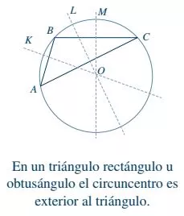

DefiniciónTriángulo. Es una figura cerrada o polígono formado por tres rectas que se intersecan (cortan) una a una en tres puntos, es el polígono o figura geométrica formada por tres lados que a su vez forman entre si tres ángulos.
Los puntos de intersección son los vértices del triángulo ABC.
Cada uno de los segmentos \(\overline{AB}\), \(\overline{BC}\) y \(\overline{AC}\) son los lados del triángulo, que por lo general se designa con una letra minúscula e igual a la del vértice opuesto; así, el lado \(\overline{AB}\) se denomina \(c\), ya que el vértice \(C\) es el opuesto a dicho lado \(\overline{AB}\), de igual manera \(\overline{BC}=a\) y \(\overline{AC}=b\).
Los lados forman los ángulos internos que se designan por la letra de los vértices en minúsculas de los mismos o por letras del alfabeto griego.
Por lo tanto, un triángulo tiene tres ángulos, tres lados y tres vértices.
En la figura:
Vértices: \(A, B, C\)
Lados: \(\overline{AB}\), \(\overline{BC}\), \(\overline{AC}\). O también \(a, b, c\).
Ángulos internos: \(\sphericalangle A\), \(\sphericalangle B\), \(\sphericalangle A\). O también \(\sphericalangle a\), \(\sphericalangle b\), \(\sphericalangle c\). O también \(\alpha\), \(\beta\), \(\theta\).
NotaciónLa manera más común de nombrar a los triángulos es colocar las letras de los vértices (mayúsculas) enseguida del símbolo \(\Delta\).
De la figura anterior: \(\Delta ABC\)
Clasificación de los triángulosLos triángulos se clasifican, de acuerdo a la longitud de sus lados y de acuerdo a la magnitud de sus ángulos.
De acuerdo a la longitud de sus ladosTriángulo equilátero. Tiene sus tres lados iguales.
Triángulo isósceles. Tiene 2 lados iguales.
Triángulo escaleno. Tiene sus tres lados diferentes.
De acuerdo a la magnitud de sus ángulosTriángulo rectángulo. Es el que tiene un ángulo recto.
Triángulo acutángulo. Es el que tiene sus 3 ángulos agudos.
Triángulo obtusángulo. Es el que tiene solo un ángulo obtuso.
Rectas y puntos notablesSon rectas y puntos con características especiales dentro de un triángulo.
Altura del triángulo. Es el segmento perpendicular trazado desde un vértice al lado opuesto.
Ortocentro. Se define así al punto donde se intersecan las tres alturas del triángulo. Identificado con la letra O. \(\overline{AL}\), \(\overline{BK}\), \(\overline{CM}=Alturas\)
\(\overline{AL}\), \(\overline{BK}\), \(\overline{CM}=Alturas\)
\(\overline{AB}\), \(\overline{AC}\), \(\overline{AD}=Alturas\)
\(\overline{AO}\), \(\overline{BO}\), \(\overline{DO}=Alturas\)
Mediana. Así se denomina al segmento que une un vértice con el punto medio del lado opuesto.
Baricentro, gravicentro o centro de gravedad. Es el punto de intersección de las medianas de un triángulo, siempre es interior al triángulo, esta representado por la letra O.
\(\overline{AL}\), \(\overline{BK}\), \(\overline{CM}=Medianas\)
Bisectriz del ángulo. Recta que divide en 2 ángulos iguales a un ángulo interior de un triángulo.
Incentro. Es el punto donde se intersecan las bisectrices, es interior al triángulo, representado por el punto O, el cual corresponde a la circunferencia inscrita en el triángulo cuyos lados son tangentes a la circunferencia.
\(\overline{AO}\), \(\overline{BO}\), \(\overline{CO}=Bisectrices\)
Mediatriz. Recta perpendicular al lado de un triángulo y que pasa por el punto medio de este mismo lado.
Circuncentro. Es el punto donde se intersecan las mediatrices, representado por el punto O, el cual corresponde al centro de la circunferencia circunscrita.
\(\overline{KO}\), \(\overline{LO}\), \(\overline{MO}=Mediatrices\)
 \(\overline{KO}\), \(\overline{LO}\), \(\overline{MO}=Mediatrices\)